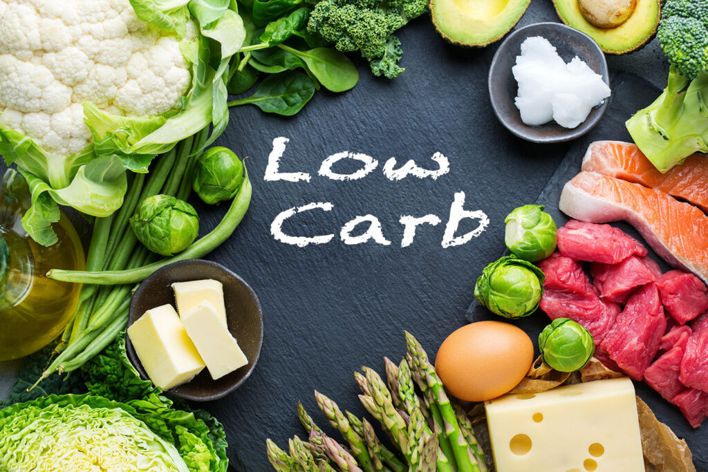

النظام الغذائي قليل الكربوهيدرات (Low-carb Diet) هو نمط غذائي يقوم على تقليل استهلاك الكربوهيدرات وزيادة استهلاك البروتينات والدهون الصحية. في هذا النظام، يتم تقليل تناول المصادر الرئيسية للكربوهيدرات مثل الحبوب والسكريات والنشويات، ويتم التركيز على تناول البروتينات النباتية والحيوانية والدهون الصحية.
1. نظام الكيتو (Ketogenic Diet): يعتبر هذا النظام الغذائي من أشهر النظم قليلة الكربوهيدرات. يتم فيه تقليل تناول الكربوهيدرات بشكل كبير وزيادة تناول الدهون الصحية وكمية معتدلة من البروتين. هدف هذا النظام هو دخول الجسم في حالة تسمى "التيتانوليز"، حيث يعتمد الجسم على الدهون كمصدر رئيسي للوقود بدلاً من الكربوهيدرات. 2. نظام الكاربوهيدرات المعتدلة (Moderate-carb Diet): هذا النظام يتضمن تناول كمية معتدلة من الكربوهيدرات، وتحديداً الكربوهيدرات الغذائية الصحية مثل الحبوب الكاملة والخضروات. يتم التركيز على تناول البروتينات والدهون الصحية مثل الأسماك والمكسرات والبذور. 3. نظام الكربوهيدرات المنخفضة (Low-carb Diet): يعتبر هذا النظام وسطاً بين النظام الكيتو والنظام المعتدل. يتم فيه تقليل تناول الكربوهيدرات بشكل معتدل، ويشمل تناول مصادر معتدلة من البروتينات والدهون الصحية.
النظم الغذائية قليلة الكربوهيدرات يعتقد أنها تساعد في فقدان الوزن وتحسين صحة القلب وتثبيط الشهية وتثبيط الارتفاع السكري وتحسين الحساسية للأنسولين. ومع ذلك، يجب أن يتم اتباع هذه النظم الغذائية بحذر وتحت إشراف طبي، خاصة إذا كنت تعاني من حالات صحية معينة مثل مرض السكري أو أمراض الكلى أو الأمراض المزمنة الأخرى.